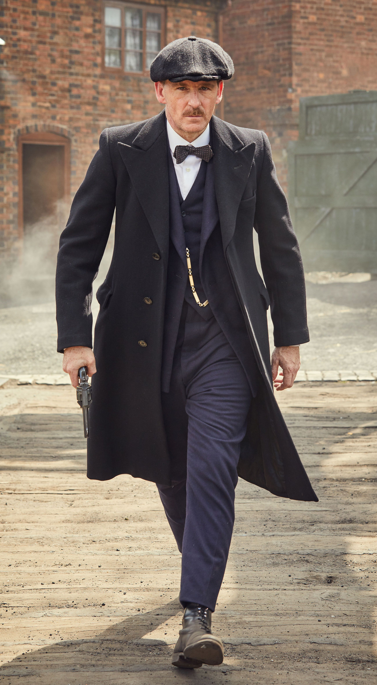

Arthur Shelby
Arthur William Shelby Sr. era el padre de los hermanos Shelby. Abandonó a los niños cuando eran pequeños, dejándolos al cuidado de su tía, Polly Shelby.Pronto regresó durante 1919, prometiéndole a su hijo Arthur que construirían un imperio de casinos, sin embargo, esto se revela como una estratagema para obtener dinero de los Peaky Blinders. Le disparan en algún momento durante 1924 en Boston después de salir de un bar. Los niños, al no haber conocido a su padre, no se entristecen por su muerte.